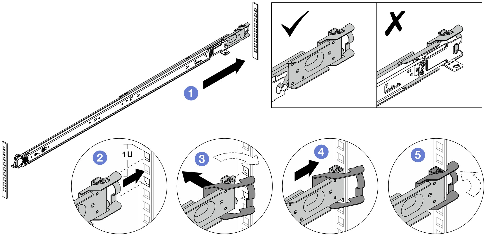
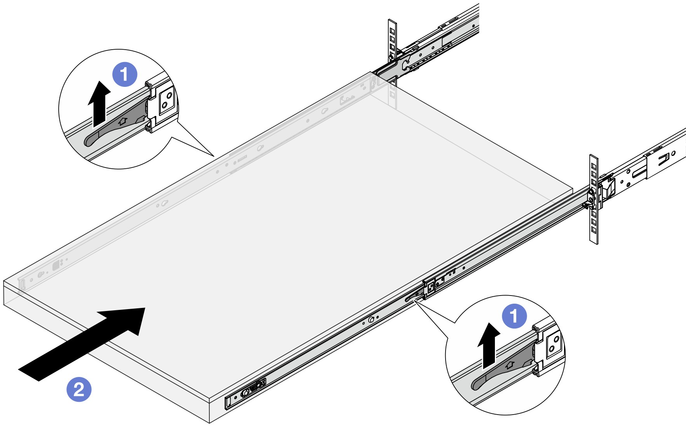
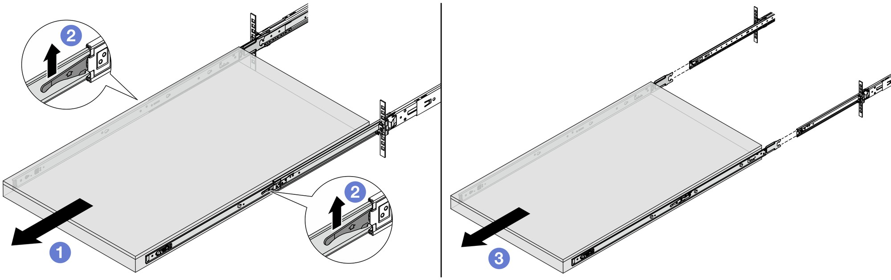

配图

图源：联想 ThinkSystem SR630 V4《将导轨安装到机架（滑轨）》图 1，https://pubs.lenovo.com/sr630-v4/zh-CN/install_rails_slide；把外侧导轨拉向背面安装凸缘，安装销对齐方孔，背面滑锁打开后再推到位并扳回闭合。插图用对勾和叉标明背面滑锁与凸缘的正确、错误咬合。

图源：联想 ThinkSystem SR630 V4《将服务器安装到机架（滑轨）》图 5，https://pubs.lenovo.com/sr630-v4/zh-CN/install_the_server_slide_rail；步骤 1 向上推动导轨上的滑锁，步骤 2 将服务器完全推入机架，直到两侧滑锁咔嗒一声锁定到位。

图源：联想 ThinkSystem SR630 V4《从机架上卸下服务器（滑轨）》图 3，https://pubs.lenovo.com/sr630-v4/zh-CN/remove_the_server_slide_rail；步骤 1 将服务器完全拉出，步骤 2 向上推动导轨上的滑锁，步骤 3 由三人把服务器从导轨中抬离。
结构原理
本节所有数字只写来源里给出的；来源没有就写「来源未给出」，不估算、不换算成看似精确的值。
堆叠方案
按「从机柜立柱到服务器机箱」写。左右各一组导轨，结构对称。
| 层级 | 零件 | 材料 | 厚度/尺寸 | 固定方式 | 依据 |
|---|---|---|---|---|---|
| L1（最外） | 机柜前后垂直安装凸缘（方孔或圆孔立柱） | 未注明 | 联想插图以 1U 孔距示意对齐，未给出孔边长；戴尔按「所需 U 位的上下孔」对齐 | 免工具：安装销卡入孔中，由滑锁/锁扣保持。戴尔另有带工具安装：用户自备 8 颗螺钉 | 联想「将导轨安装到机架」；戴尔 Sliding Rails「Installing and Removing Tool-less Rails」 |
| L2 | 外轨及前后端头（含安装销、正面/背面滑锁或锁扣） | 未注明 | 来源未给出轨长、截面 | 背面先就位并闭合滑锁，再装正面；戴尔为后端完全座入至锁扣咔嗒，再座入前端 | 联想图 1、图 2；戴尔 tool-less 步骤 1–3 |
| L3 | 中间导轨（联想在卸内轨时明确写出「中间导轨」） | 未注明 | 来源未给出 | 相对外轨伸出，并与内轨互锁 | 联想「将服务器安装到机架」步骤 1：向上推动滑锁使内侧导轨脱离中间导轨 |
| L4 | 内侧导轨 | 未注明 | 来源未给出 | 联想：内轨插槽对准服务器侧 T 型销钉，向前滑动锁定，标记 Front 朝前，L/R 分左右。戴尔：内滑轨从机柜拉出锁定；服务器后立柱落入滑轨组件的后部 J 形槽，再向下旋转使全部立柱落入 J 形槽 | 联想安装服务器步骤 2；戴尔「Pull the inner slide rails… J-slots」段 |
| L5（最内） | 服务器机箱上的挂点（联想：T 型销钉；戴尔：rail standoff）以及正面固定件 | 未注明 | 联想可选在每根导轨背面加一颗 M6 螺钉；戴尔运输固定用各闩下方的硬安装螺钉，#2 十字螺丝刀 | 联想：推入至两侧滑锁咔嗒后，打开机架滑锁盖并拧紧正面螺钉。戴尔：推入至锁杆咔嗒，再按两侧滑动释放锁按钮把机器推入；正面撞击闩自动接合，向上拉释放 | 联想安装步骤 5–6、卸下步骤 2–4；戴尔 lock levers / slide-release lock buttons / slam latch 段 |
剖面示意：
flowchart LR 立柱["L1 机柜方孔或圆孔立柱"] --> 外轨["L2 外轨 + 端头锁扣"] 外轨 --> 中轨["L3 中间导轨"] 中轨 --> 内轨["L4 内轨"] 内轨 --> 机箱["L5 服务器挂点与正面闩"]
零件清单
| 零件 | 数量 | 功能 | 材料 | 依据 |
|---|---|---|---|---|
| 滑轨组件（左、右） | 2 | 把服务器挂在机柜里，并允许前后抽出 | 未注明 | 联想安装导轨步骤 4「安装另一根导轨」；戴尔「left and right rail end pieces」 |
| 背面安装销与背面滑锁 | 每轨后端 1 组（按插图） | 免工具卡入后立柱并锁住外轨 | 未注明 | 联想「将背面安装销安装到机架」 |
| 正面安装销与正面滑锁 | 每轨前端 1 组（按插图） | 免工具卡入前立柱 | 未注明 | 联想「将正面安装销安装到机架」 |
| 端头中点的锁扣释放按钮 | 戴尔写在端头中点 | 拉开后可以把整根导轨从立柱上卸下 | 未注明 | 戴尔：「pull the latch release button on the end piece midpoint and unseat each rail」 |
| 导轨滑锁 / 锁杆 / 滑动释放锁按钮 | 联想：导轨上的滑锁；戴尔：lock levers 与 slide-release lock buttons | 控制内轨与中轨的互锁，决定服务器能否继续推入或抬离 | 未注明 | 联想安装图 5、卸下图 3；戴尔相应段落 |
| T 型销钉（联想）或轨立柱 standoff（戴尔） | 来源未给出每侧数量 | 把内轨挂到服务器侧面，或把服务器挂进 J 形槽 | 未注明 | 联想安装步骤 2、卸下步骤 4；戴尔 J-slots 段 |
| 机架滑锁盖与正面固定螺钉 | 联想：机架正面两侧；戴尔：撞击闩下的硬安装螺钉 | 把已推到位的服务器固定在机柜正面，用于运输或不稳定环境 | 未注明 | 联想安装步骤 6、卸下步骤 2；戴尔 slam latch 段 |
| 可选背面 M6 螺钉 | 联想：每根导轨 1 颗，可选 | 把服务器固定到机架背面 | 未注明 | 联想安装步骤 6b |
| 滚珠固定器 | 来源未给出数量 | 联想要求在把内轨装入中间导轨前，两侧滚珠固定器到达最外侧；位置不对就滑到最前端 | 未注明 | 联想安装步骤 5 注 |
| 蓝色卡扣（联想，卸内轨时） | 来源未给出数量 | 按蓝色卡扣松开滑锁，再向后推内轨，使 T 形销钉脱离 | 未注明 | 联想卸下步骤 4 |
装配顺序
按联想 ThinkSystem SR630 V4（套件名称：ThinkSystem Toolless Slide Rail Kit V4，以及 ThinkSystem Advanced Toolless Slide Rail Kit V4）：
- 将外侧导轨朝机架背面安装凸缘拉伸，安装销与凸缘对齐，并使背面滑锁开口对准机架框架；向机架外推直到背面滑锁打开，再朝凸缘推入，把背面滑锁扳回闭合。
- 将内侧导轨完全向内滑动，使正面滑锁打开；打开正面滑锁，把安装销与正面凸缘对齐，向前拉直到销从孔中穿过，松开正面滑锁把导轨固定到机架。
- 检查搭钩是否挂住，来回滑动导轨，确认不会弹出；两端必须处于相同高度。再装另一侧。
- 从机架正面把导轨完全拉出。向上推动滑锁，使内侧导轨脱离中间导轨，卸下内侧导轨。
- 把内轨插槽与服务器侧面 T 型销钉对齐，向前滑动直到锁定；Front 标记朝前，按 L/R 分左右。
- 确认两侧滚珠固定器在最外侧。三人抬起服务器，把内轨装入中间导轨。向上推动滑锁，把服务器完全推入，直到两个滑锁咔嗒锁定。
- 向下翻转打开机架滑锁盖，拧紧螺钉固定正面；可选在每根导轨背面装一颗 M6 螺钉。
从机架卸下服务器（联想，按拆解顺序原文；不是运行中热抽整机，指南要求先关闭电源并拔线）：
- 若有理线臂（CMA），先卸下。
- 向下打开机架滑锁上的盖子，拧松固定服务器的螺钉。
- 将服务器完全拉出；向上推动导轨上的滑锁；由三人抬起，把服务器完全从导轨中卸下，放在平坦坚固平面上。
- 按蓝色卡扣松开滑锁，向后推动内侧导轨，直到 T 形销钉脱离，再对另一侧重复。
按戴尔 Sliding Rails 指南中与联想不同、且已在 PDF 中核对过的步骤（插图不代表某一特定机型）：
- 免工具安装：左右轨端头标有 FRONT 的一侧朝内，对准所需 U 位的上下孔；先把后端完全座入立柱直到锁扣咔嗒，再同样座入前端。拆轨时拉动端头中点的锁扣释放按钮，使导轨脱离。
- 把内滑轨从机柜拉出直到锁定。将服务器每侧后部的轨立柱落入滑轨组件后部的 J 形槽，再把机器向下旋转，直到全部立柱落入 J 形槽；向内推到锁杆咔嗒到位。然后按下两侧的滑动释放锁按钮，把机器推入机柜。
- 正面撞击闩在推入时自动接合，向上拉即可释放。若要在机柜内运输或环境不稳定，拧紧各闩下方的硬安装螺钉（#2 十字）。未配备撞击闩的系统按该指南步骤 3 用螺钉固定。
- 带工具的安装方式需要用户自备 8 颗螺钉：#10-32、#12-24、#M5 或 #M6，螺钉头直径必须小于 10 mm（0.4 英寸）。
联想指南的警告：存在机架翻倒危险；不要在安装位置给滑轨上的设备加载，也不要把滑轨安装的设备留在抽出位置。搬抬按重量档提示，并由三人完成安装和拆卸。戴尔指南是 condensed reference，要求先阅读随机的安全、环境和法规说明，并且只有受过训练的维修技术人员才可拆系统盖。
受力与运动分析
- 受力路径：服务器重量经机箱挂点（T 型销钉或轨立柱）传到内轨，再经中轨、外轨和端头安装销，进到机柜立柱。抽出维护时，导轨处于悬臂状态；两家来源都禁止把抽出位置当作搁板加载。来源未给出额定承重的单一牛顿值；联想用搬抬图标给出 18–32 kg（39–70 磅）和 32–55 kg（70–121 磅）两档，并要求用正确方式搬抬、三人操作。
- 运动关系：外轨相对机柜基本固定（除非按下端头释放按钮拆轨）。内轨相对外轨沿前后滑动；滑锁或锁杆限制「能否继续推入/拉出/抬离」。戴尔还有一处独立动作：机器先以立柱落入 J 形槽，再向下旋转座实。正面撞击闩或滑锁盖内的螺钉是推到位之后的保持，不是滑轨滚动本身。
- 失效风险：联想要求检查搭钩挂住、导轨不会弹出、两端同高，否则一侧掉落或卡死。滚珠固定器不在最外侧时，内轨可能装不进中轨。戴尔写明插图不对应特定机型，混用不同套件的 J 形槽和销间距会对不准（推断，来源未做混用试验）。抽出后若无人扶持且未按来源要求操作，机柜可能失稳。
设计要点与参数
| 要点 | 内容 | 依据 |
|---|---|---|
| 套件名称 | 联想：ThinkSystem Toolless Slide Rail Kit V4；ThinkSystem Advanced Toolless Slide Rail Kit V4。戴尔 PDF 日文清单出现 B6 Dell ReadyRails II 滑动导轨组件 2 本，英文正文未把所有机型写成同一套件 | 联想安装导轨页开篇；戴尔 PDF 文本 |
| 孔型 | 戴尔明确适用于方孔或圆孔机柜的免工具安装 | 戴尔标题「Square Hole or Round Hole Racks」 |
| 对齐 | 戴尔：对到所需 U 位的上下孔。联想插图以 1U 示意背面销与孔的关系，并要求两端同高 | 戴尔步骤 2；联想图 1 与「重要」注 |
| 拆轨释放 | 戴尔：拉端头中点的锁扣释放按钮 | 戴尔 tool-less 步骤 4 |
| 整机解锁抽出 | 联想：先松正面固定螺钉，完全拉出后再向上推滑锁，才能把服务器抬离导轨。戴尔：按两侧滑动释放锁按钮才能继续推入；正面撞击闩向上拉释放 | 联想卸下步骤 2–3；戴尔相应段落 |
| 服务器与内轨的接口 | 联想：T 型销钉 + 内轨插槽，卸下时按蓝色卡扣。戴尔：后立柱 + J 形槽，向下旋转座实 | 两家安装/卸下步骤。不要把这两种挂点写成可以互换 |
| 带工具安装螺钉（仅戴尔给出） | 8 颗用户自备：#10-32、#12-24、#M5 或 #M6；头径必须小于 10 mm（0.4 英寸） | 戴尔 NOTE |
| 搬抬 | 联想：18–32 kg（39–70 磅）、32–55 kg（70–121 磅）两档图标；安装和拆卸都要求三人 | 联想各页 S036、过程警告 |
| 轨长、额定动载、滑块材料 | 来源未给出 | — |
优缺点
优点
- 免工具端头把导轨卡在标准机柜孔里，场内加轨或换轨不必先准备同一规格的一盒螺钉（带工具方案仍是备选）。
- 解锁拉片/滑锁/撞击闩让整机可以沿导轨拉到维护位置，而不必先把外轨从立柱上拆掉。
- 左右标识、Front 朝向、滚珠固定器位置、两端同高等检查项，减少装反和卡死。
- 正面锁盖螺钉、可选背面 M6、戴尔撞击闩下的运输螺钉，把「日常维护能抽出」和「运输时锁死」分开。
缺点 / 代价
- 抽出后导轨悬臂，来源明确禁止当搁板使用，也不可把设备留在抽出位置。
- 内轨与机箱的接口各家不同（T 型销钉对插槽，或立柱对 J 形槽），不能只按「都能免工具」混装。
- 安装和抬离需要多人，重量稍有不慎就会伤人或翻柜。
- 结构件多：外轨、中轨、内轨、端头锁、滑锁、可选理线臂，比固定耳片直接上螺丝更复杂。
可借鉴点
- 把「轨怎么固定到机柜」和「机器怎么固定到轨、怎么解锁抽出」写成两套锁：前者是端头销和滑锁，后者是内轨滑锁、撞击闩和正面螺钉。维护时只打开第二套，不要先拆第一套。
- 设计解锁拉片时要让左右两侧都能在完全拉出后松开互锁，并且在推回时自动咔嗒上锁；同时要有单独的运输螺钉，避免只靠弹簧闩跑长途。
- 机箱侧挂点必须和指定滑轨配套，并在说明书里写清 Front、L/R、滚珠保持架位置；不要假设另一家的 J 形槽能接自己的 T 型销。
- 在安装位置写明：禁止把抽出的机器当架子堆东西，并给出需要几个人搬抬。
与库中相似案例对比
| 对比项 | 本案例（服务器免工具机柜滑轨） | Blum TIP-ON 按压弹开抽屉：柜体轨弹簧单元与抽屉锁止模块 | 热插拔硬盘托架：前手柄锁止、托盘滑入并把接口盲插到背板 | 任天堂 Switch Joy-Con 滑轨连接 |
|---|---|---|---|---|
| 运载对象 | 整台机架式服务器 | 家具抽屉 | 单只硬盘托盘 | 手柄 |
| 轨道角色 | 承重、导向，并可把整机抽到维护位 | 弹簧弹出与锁止，不是机柜承重轨 | 托盘在硬盘槽里短行程滑动，终点是背板连接器 | 手柄沿薄滑轨插入并锁止 |
| 解锁 | 拉片、滑锁或撞击闩；再松运输螺钉 | 按压 TIP-ON 单元 | 打开托盘手柄或释放滑锁 | 见该案例的锁扣，不是机柜滑锁 |
| 机柜接口 | 方孔或圆孔立柱上的免工具端头 | 柜体侧板，不是 19 英寸立柱 | 无立柱端头 | 无 |
| 分类取舍 | 06：整机如何被装进机柜并抽出维护 | 04：家具按压弹出机构 | 06：前面板存储模块，行程和锁都不是整机导轨 | 02：手柄连接 |
相关案例
- Blum TIP-ON 按压弹开抽屉：柜体轨弹簧单元与抽屉锁止模块
- 热插拔硬盘托架：前手柄锁止、托盘滑入并把接口盲插到背板
- 任天堂 Switch Joy-Con 滑轨连接
- 电动工具电池包：滑轨插入与按压锁舌（得伟拆解）
- Framework Desktop 免工具面板与标准件模块化
- 分类索引：拆解与可维修
来源与核实记录
- 主来源：联想 ThinkSystem SR630 V4：将导轨安装到机架（滑轨）（联想 Docs 中文。Toolless Slide Rail Kit V4、背面/正面安装销与滑锁、同高检查、重量档）
- 补充来源 1：将服务器安装到机架（滑轨）（同属联想。卸内轨、T 型销钉、滚珠固定器、向上推滑锁后推入至咔嗒、正面螺钉与可选 M6）
- 补充来源 2：从机架上卸下服务器（滑轨）（同属联想。松正面螺钉、完全拉出、上推滑锁、三人抬离、蓝色卡扣卸内轨）
- 补充来源 3：Dell Rack Installation - Sliding Rails（PDF）（Dell Inc. 独立机构。免工具方孔/圆孔、锁扣咔嗒、端头中点释放按钮、8 颗螺钉规格与头径小于 10 mm、内轨 J 形槽、滑动释放锁按钮、撞击闩向上拉。PDF 标题页可见 07-2011 字样）
- 核实：2026-11-22 打开三份联想中文页并下载官方插图；下载戴尔 PDF 并提取英文步骤原文。未引用未能打开的超微机箱手册。